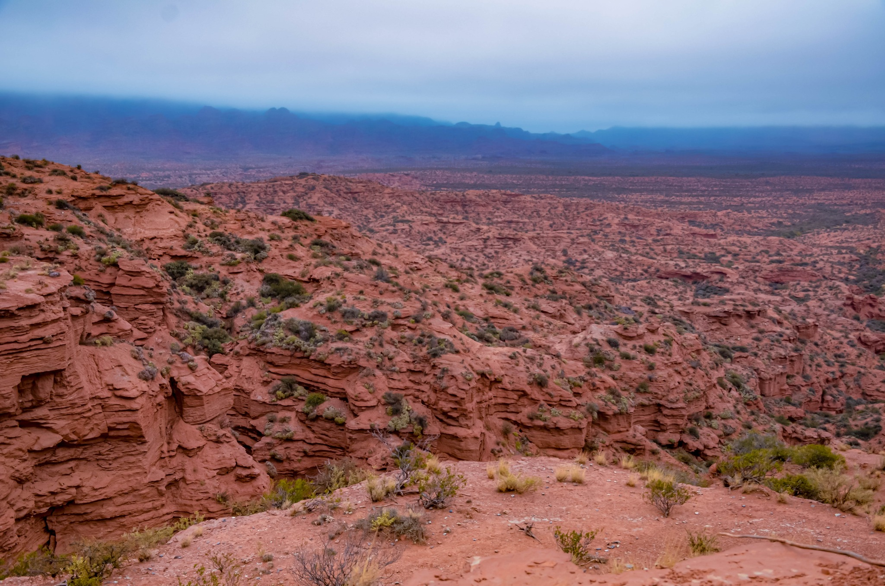
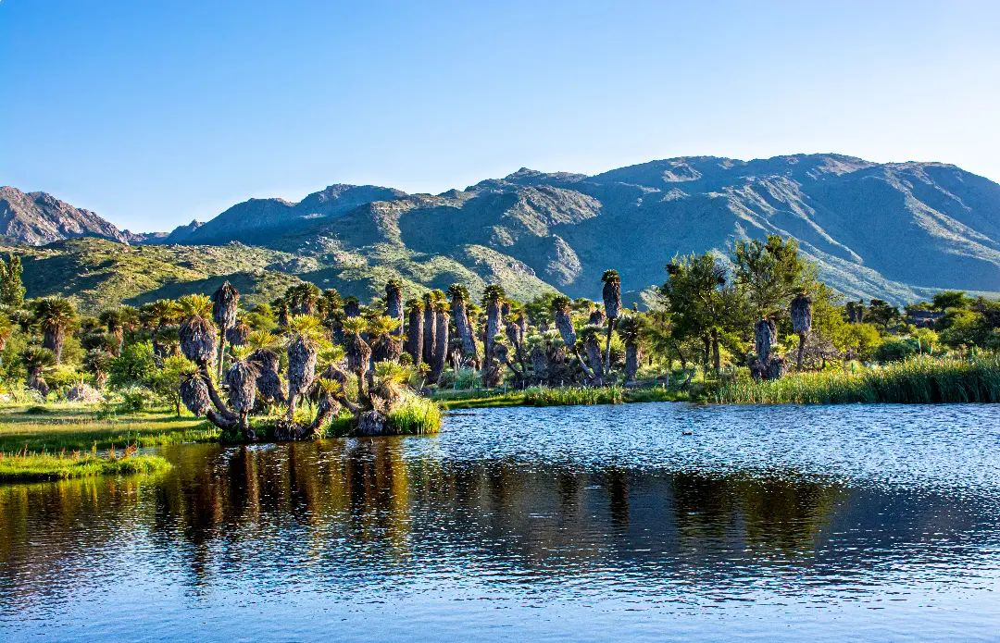
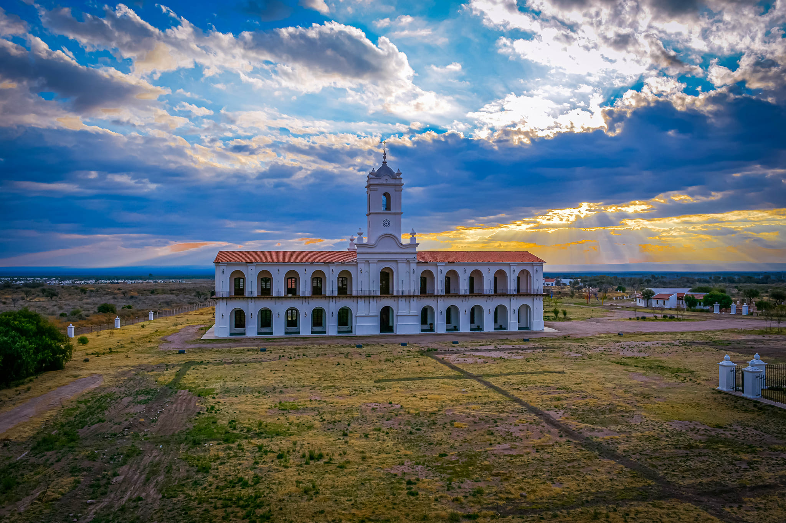

Sierras de las Quijadas

Magnífico y árido paisaje de serranías erosionadas por el agua y el viento, que generan laberintos, farallones y barrancos de un intenso color rojizo.
Ver ubicación en Google MapsConocé los lugares más lindos, descubrí la magia de cada pueblo y ciudad.

Magnífico y árido paisaje de serranías erosionadas por el agua y el viento, que generan laberintos, farallones y barrancos de un intenso color rojizo.
Ver ubicación en Google Maps
Un pueblo nacido en medio de un valle, rodeado de ríos y sierras. Sus paisajes naturales invitan a disfrutar de diferentes actividades al aire libre.
Ver ubicación en Google Maps
Fundada en 2003, La Punta es una ciudad joven que cuenta con atractivos como el Planetario, el Observatorio y el Estadio Juan Gilberto Funes.
Ver ubicación en Google Maps